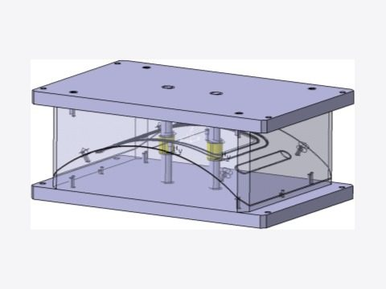
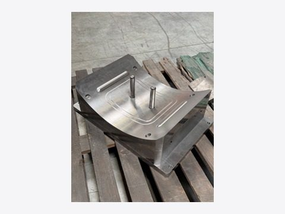
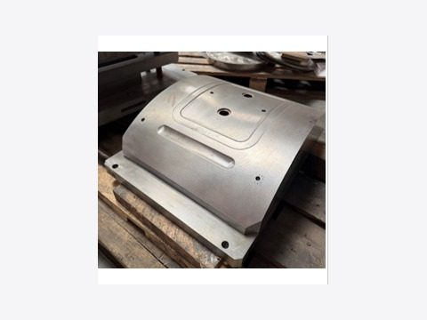
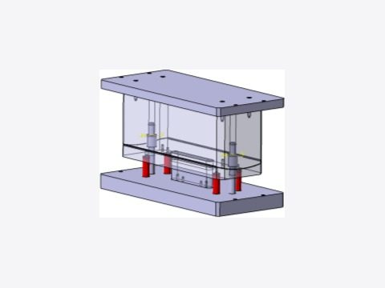
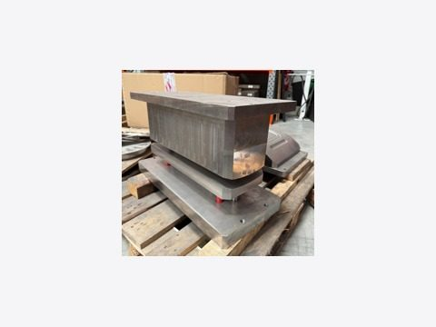

← Retour aux réalisations
PROJ · 04 - En entreprise
Outillages d'emboutissage
Concevoir les outils qui donnent leur forme aux tôles, de la 3D à la pièce d'acier usinée.
Le principe
Donner sa forme à une tôle en la pressant
L'emboutissage consiste à mettre une tôle en forme en la pressant entre deux pièces d'acier : le poinçon, qui pousse, et la matrice, qui creuse. En se refermant, la presse force la tôle à épouser la forme voulue.
Chaque pièce à produire exige son propre outillage, dessiné sur mesure. C'était une de mes missions régulières chez COAERO : je les concevais sur CATIA V5, puis ils étaient usinés avant d'être mis au point en atelier.
Premier outillage
De la conception 3D aux pièces usinées



Second outillage
Le dessin, puis l'outil réel


Envie d'en savoir plus ?
Découvrez mes autres réalisations, ou contactez-moi directement.